RESTful API
API endpoint URLs will be different for you depending where you upload the project.
GitHub: https://github.com/AndrejPHP/restful-api
API methods
| Method | URI | Full URL |
|---|---|---|
| GET | /api/todos | https://www.andrejphp.com/portfolio/api/todos |
| GET | /api/todos/{id} | https://www.andrejphp.com/portfolio/api/todos/{id} |
| POST | /api/todos | https://www.andrejphp.com/portfolio/api/todos |
| PUT | /api/todos/{id} | https://www.andrejphp.com/portfolio/api/todos/{id} |
| DELETE | /api/todos/{id} | https://www.andrejphp.com/portfolio/api/todos/{id} |
| GET | /api/todos/user/{userId} | https://www.andrejphp.com/portfolio/api/todos/user/{userId} |
| DELETE | /api/todos/user/{userId} | https://www.andrejphp.com/portfolio/api/todos/user/{userId} |
| GET | /api/todos/completed | https://www.andrejphp.com/portfolio/api/todos/completed |
| GET | /api/todos/uncompleted | https://www.andrejphp.com/portfolio/api/todos/uncompleted |
| DELETE | /api/todos/delete/{id} | https://www.andrejphp.com/portfolio/api/todos/delete/{id} |
| DELETE | /api/todos/delete/all | https://www.andrejphp.com/portfolio/api/todos/delete/all |
Examples
GET /api/todos
Retrieve API data
To view the data nicely formatted choose Pretty and JSON as shown in the image
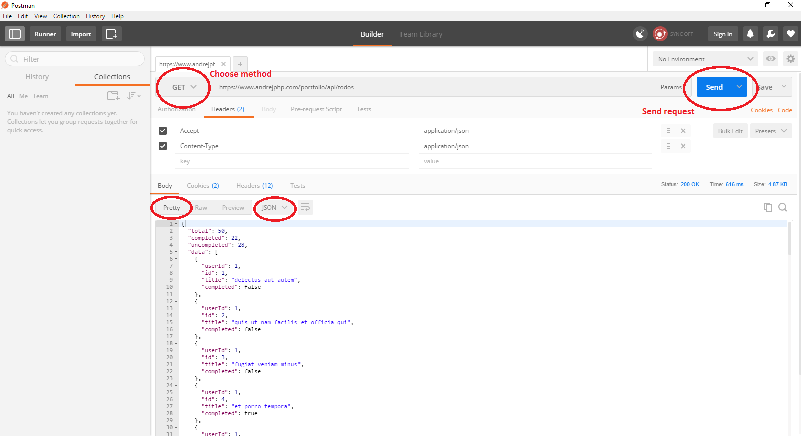GET /api/todos/{id}
Retrieve single record instead of all data where {id} is the id of the todo
For example a GET request to /api/todos/15 would result in todo with ID 15 being returned. If todo with given ID does not exist, empty JSON string is returned.
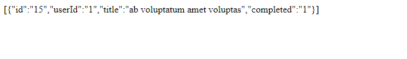 POST /api/todos
Create todo record by sending valid JSON data as a request
Required fields: id, userId, title
completed is optional and if not set the default inserted value is false
id - must be unique, not empty and integer
userId - must not be empty and must be an integer
title - must not be empty and minimum length required is 5 characters
completed - must be a boolean (true or false)
Here is an example where the request fails i.e. does not result in a new record created.
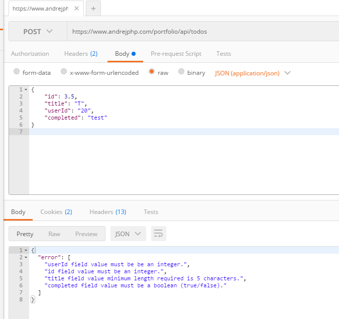
If you are wondering what's set in Headers here it is:
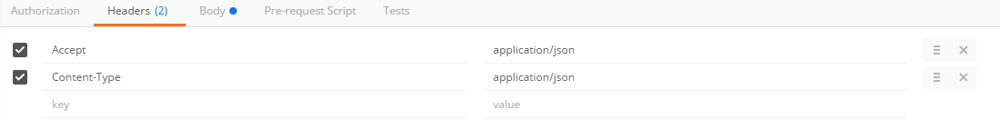
Example where the sent data is valid but there is already record with the given id so it returns error.
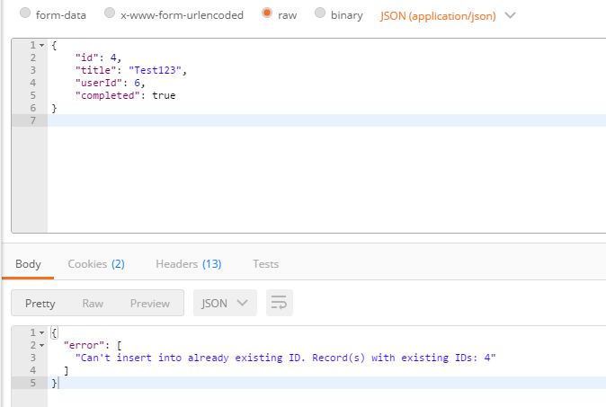
Successful request. Full data is returned with the newly created record shown first.
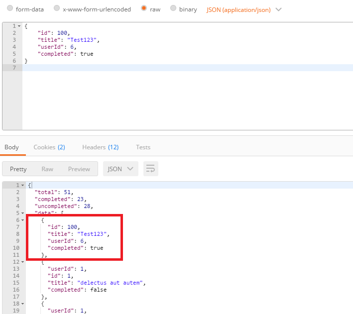
You can also create multiple records as shown in this example
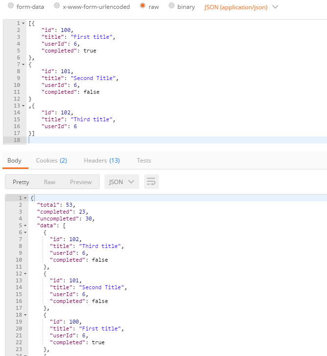
PUT /api/todos/{id}
Update existing record where {id} is the id of the record
The same rules apply to the data as described in POST /api/todos with a difference that you can't update id and userId. Only title and completed can be updated. If you set id and userId values they will be ignored.
Example:
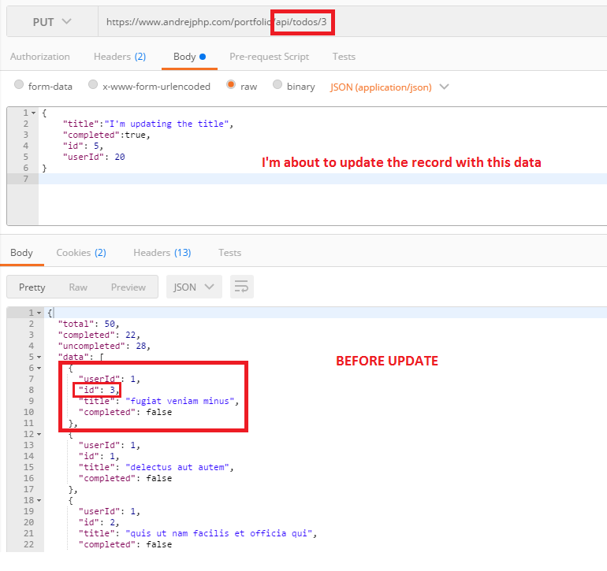
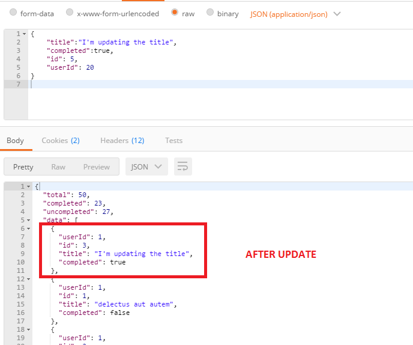
DELETE /api/todos/{id}
Delete existing record where {id} is the id of the record
Deletes the record with id of {id} and returns the remaining of the data. If the id is not found error message is returned.
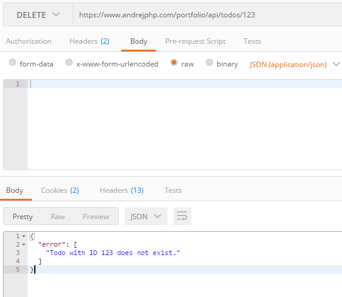
Successful deletion of todo with id 7.
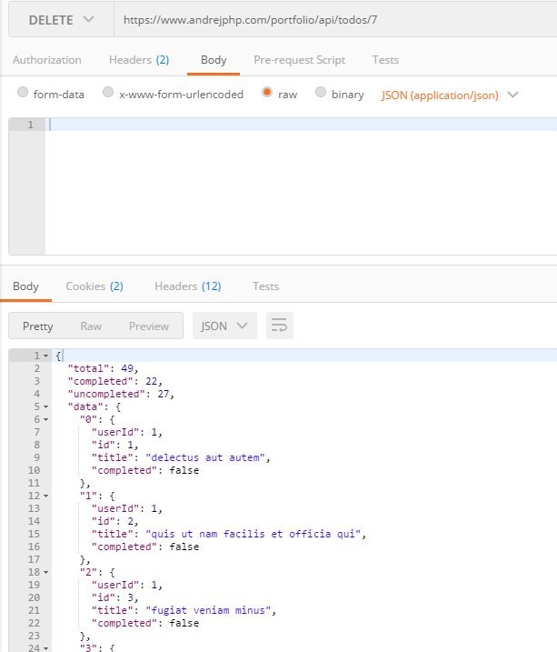
GET /api/todos/user/{userId}
Retrieve records (todos) for user where {userId} is the id of the user
If user does not exist i.e. there are 0 records for the given userId, empty data is returned instead of error message saying that the user does not exist.

Response with todos for existing user.
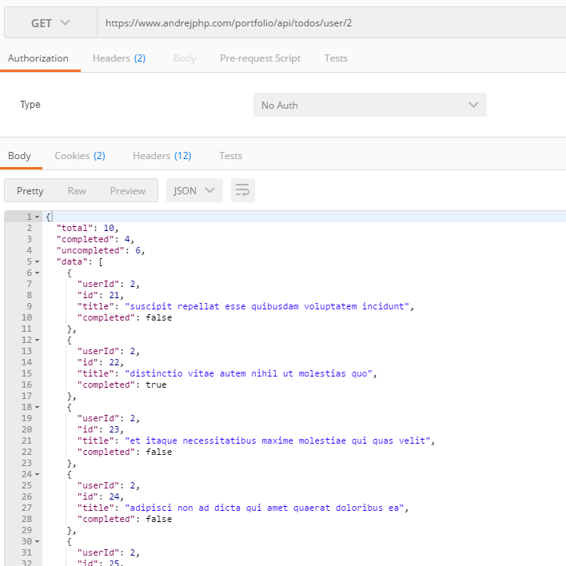
DELETE /api/todos/user/{userId}
Delete todos created by user with {userId} and return the rest of the data.
If no user with {userId} is found error message is displayed otherwise todos created by this user are deleted and remaining data returned as response to show that the request was successfully performed.
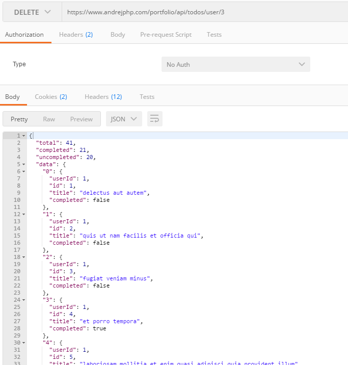
GET /api/todos/completed
Retrieve completed todos i.e. completed = true
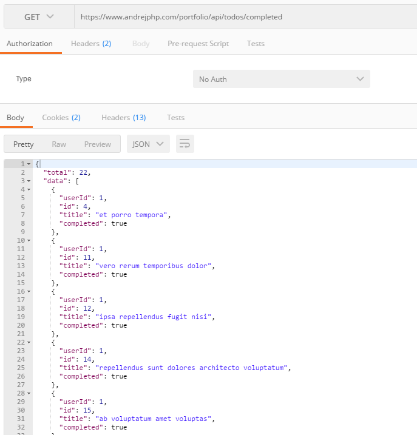
GET /api/todos/uncompleted
Retrieve uncompleted todos i.e. completed = false
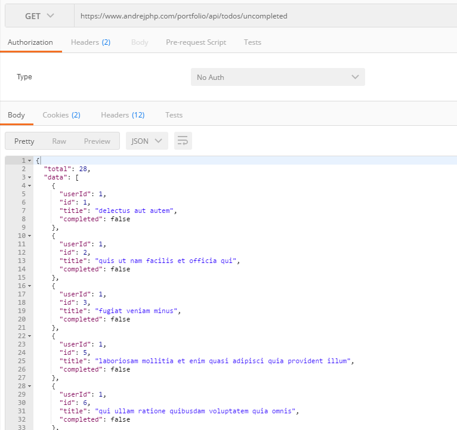
DELETE /api/todos/delete/{id}
Delete record (todo) with id of {id} - this works in exactly the same way as DELETE /api/todos/{id} except that it has /delete/ in the URL request
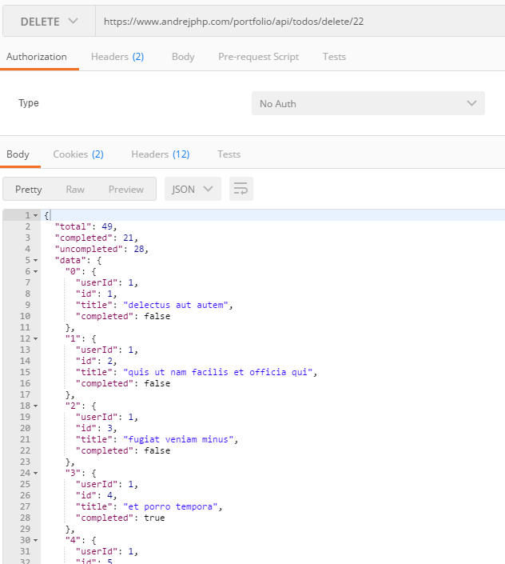
DELETE /api/todos/delete/all
Deletes all records (todos) and returns empty data set
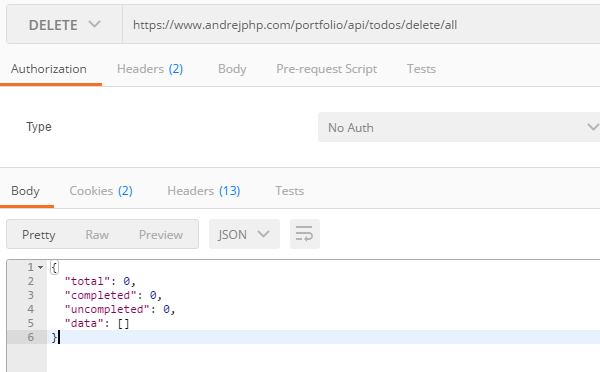